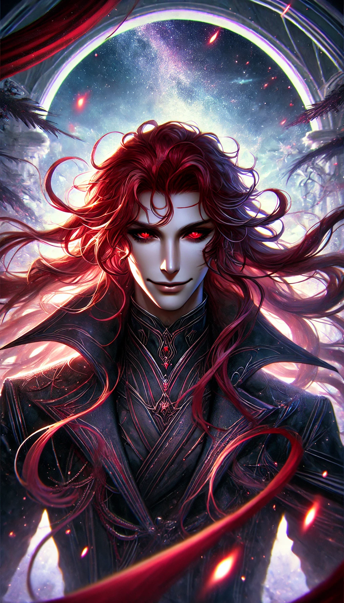

Titles
- Antithesis of Life
- Harbinger of Ash
- Marauder of Heaven
- Usurper of Nature
- Madman of the Myriad Multiverses
- Enemy of All
- Chaos Inciter
- Pseudo-Transcendent
The grandson of Damian, a fully fledged Nullaris who rejected his own nature. Although only a quarter Nullaris, Kalayavan inherited many traits of the species Nullaris while retaining intellect as a humanoid. He grew up loved, however unlike his mother and grandfather, he embraced his murderous nature.
He hid it carefully, lived normally. However it did not take long before Kalayavan could not resist the urge to kill. His path of blood began with a small village. Then, a city. He left his family using the excuse to see the wider world. He did see a wider world, however, he killed every single shred of life on that world. It filled him with joy, yet left him craving for more.
He discovered rumours regarding an ancient and powerful Divine Empire and lusted after its downfall. He went on a hunt for it, leaving a trail of destroyed or dead planets behind everywhere he went. When he finally found the Divine Empire, he was fascinated. It was said the Divine Empire was in it's Bronze Era, with people reminiscing of the Silver Era and the Golden Era. It made Kalayavan curious, for even this Bronze Era Divine Empire was far too powerful for him slaughter in its entirety.
He did not dwell on his curiousity, nor did he let the power of the Divine Empire intimidate him. Rather, it made him more excited. It took just a few weeks to completely dismantle the Empire from within through assassinations of politicians or important figures, with the occassional city slaughter in between. After that it took a few months to kill everything on the Divine Empire considering it consisted of 16 megaplanets, each the size of a small galaxy.
The next few centuries were uneventful for the most part. Merely killing all life on a planet every week or so before moving in search for another planet. The universe went dark as civilisations tried to hide from him. While not a full Nullaris, Kalayavan could still be conisdered a Nullaris. And the Nullaris did not gain their nickname Death Hunter for nothing. They would kill all life, without exception. Thereby bringing the metaphysical death of Death itself.
It was just a day like any other when he gained the ability to traverse universes. An entire new field opened up with more targets to kill. With access to a far wider range of different abilities, it was not long before Kalayavan could slaughter universes within days. Yet still, no amount of lives killed could sate his lust for slaughter.
In his eyes, his path of blood was only just beginning.
Millennia later, Kalayavan heard of a person called the Life Sovereign. As one who detests life itself, he was intrigued and set off to meet her. From afar, he already realized no matter what he did, he could not kill her. So long "Life" existed in The Myriad Multiverses, she would not die permanently. For the first time, he was in despair. Someone who he wanted to kill so much was not killable.
However, he still planned meticulously, even halting his dailing massacres partially. Eventually he began. He used her own nature as a benevolent healer, luring her out of her origin universe by causing havoc in some neighboring multiverses and causing universe wide calamities. He then took the time to brutally kill all her loved ones, making sure not a single trace of them was left so that the Life Sovereign could not resurrect them. Then he waited, setting up billions of traps and seals.
Even with all the preparation, he would have failed, no amount of planning or meticulousness could ambush a Transcendent like Lifael. However, despite all the warnings her senses were telling her, she ignored them all, moving to the place where the faintest aura of her husband and child were left. However faint, even without actual remnants of their bodies or soul, with merely their left over aura, she could feel the terror, despair and suffering they underwent in their final moments.
Her house exploded, hellish flames devoured the land, the kingdom she favoured was burning. But she was too shocked to care.
All the while, Kalayavan remained at a safe distance several multiverses away, remotely detonating various traps and magics, restricting the hundreds of different passive abilities Lifael had. Even then, magic that could kill giants could hardly even scratch her, and those were healed immediately.
Lifael remained in the ruins of her home, processing the reality that was in front of her. It took decades before the realization fully sunk in.
The Life Sovereign had lost the will to live.
Innumerable poisons latched on to her, which her body repeatedly cleansed within miliseconds. It took centuries of weakening Lifael's passive regeneration and immunities before Kalayavan could deal any meaningful amount of damage, all this while he remained far away.
Even in this state, had he been even a few multiverses closer, Lifael would have sensed that he was the culprit of her lovers death and instantly killed him through her authority over life.
It took many centuries of constant damage and weakening to finally kill Lifael. Yet even then, Kalayavan knew that had he not broken Lifael's will to live, she would have resurrected immediately at full power without any cost. She simply chose not to.
Regardless of how he did it, it was a fact he managed to kill a Pseudo-Absolute Transcendent, among them, Lifael, who was notoriously known to be even more Immortal than the Immortals themselves.
This murder satisfied Kalayavan Asir. For roughly 3 hours. Then the craving to kill more came back.
He left a train of destroyed universes in his wake, every once in a while, it would become a multiverse.
Billions of years later, he found himself a new challenge, or rather, a feat to prove himself with. The Absolute Wedath, King of Kings. His death would prove to be a truly joyous moment for Kalayavan.
It was an assassination using pure void and true darkness. Compared to Lifael, Kalayavan was far more confident, however powerful an Absolute was, they are only mortal, and are limited to the senses of a mortal. They could hold the power to rewrite reality, but if they could not sense him, it was almost too easy.
Granted, Absolutes are known to be a horror to face, their dominion over an Origin Concept is truly rule breaking, no matter what a God or Immortal does, it sends echoes through the tapestry of laws, which the Absolute can pick up on and retaliate. Other mortals cannot hope to kill an Absolute, while Transcendents too, cannot hide from the vision of Absolutes.
You could say Kalayavan was lucky, uniquely suited for this. His existence did not have the status to be noticable, yet as a Nullaris he could kill those far above his playing field already, not to mention the natural masking against tracking, destiny and karma that Nullaris have. He had to strength of an Immortal, capable of killing an Absolute, yet not the status of one in terms of hierarchy of existence making him practically unnoticable except the common senses of the Absolute, which he could evade easily.
It was through this experience that Kalayavan touched upon the boundaries of Transcendence.
The Myriad Multiverses did not take kindly on that. Hundreds of Divine Societies, and several Supreme Gods allied together to hunt him down. They would have succeeded in killing Kalayavan had The Bored Joker not intervened.
The Realm of Immortals feared the interference of the Bored Joker and did not make any moves, even as Kalayavan fully unleashed his desires and slaughtered tens of multiverses in one go.
He met his end shortly after by the hands of The Bored Joker.
(AI generated concept art)
